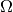

statsmodels.multivariate.pca.PCA¶
-
class
statsmodels.multivariate.pca.PCA(data, ncomp=None, standardize=True, demean=True, normalize=True, gls=False, weights=None, method='svd', missing=None, tol=5e-08, max_iter=1000, tol_em=5e-08, max_em_iter=100)[source]¶ Principal Component Analysis
Parameters: data : array-like
Variables in columns, observations in rows
ncomp : int, optional
Number of components to return. If None, returns the as many as the smaller of the number of rows or columns in data
standardize: bool, optional
Flag indicating to use standardized data with mean 0 and unit variance. standardized being True implies demean. Using standardized data is equivalent to computing principal components from the correlation matrix of data
demean : bool, optional
Flag indicating whether to demean data before computing principal components. demean is ignored if standardize is True. Demeaning data but not standardizing is equivalent to computing principal components from the covariance matrix of data
normalize : bool , optional
Indicates whether th normalize the factors to have unit inner product. If False, the loadings will have unit inner product.
weights : array, optional
Series weights to use after transforming data according to standardize or demean when computing the principal components.
gls : bool, optional
Flag indicating to implement a two-step GLS estimator where in the first step principal components are used to estimate residuals, and then the inverse residual variance is used as a set of weights to estimate the final principal components. Setting gls to True requires ncomp to be less then the min of the number of rows or columns
method : str, optional
Sets the linear algebra routine used to compute eigenvectors ‘svd’ uses a singular value decomposition (default). ‘eig’ uses an eigenvalue decomposition of a quadratic form ‘nipals’ uses the NIPALS algorithm and can be faster than SVD when ncomp is small and nvars is large. See notes about additional changes when using NIPALS
tol : float, optional
Tolerance to use when checking for convergence when using NIPALS
max_iter : int, optional
Maximum iterations when using NIPALS
missing : string
Method for missing data. Choices are ‘drop-row’ - drop rows with missing values ‘drop-col’ - drop columns with missing values ‘drop-min’ - drop either rows or columns, choosing by data retention ‘fill-em’ - use EM algorithm to fill missing value. ncomp should be set to the number of factors required
tol_em : float
Tolerance to use when checking for convergence of the EM algorithm
max_em_iter : int
Maximum iterations for the EM algorithm
Notes
The default options perform principal component analysis on the demeanded, unit variance version of data. Setting standardize to False will instead onle demean, and setting both standardized and demean to False will not alter the data.
Once the data have been transformed, the following relationships hold when the number of components (ncomp) is the same as tne minimum of the number of observation or the number of variables.
where X is the data, F is the array of principal components (factors or scores), and V is the array of eigenvectors (loadings) and V’ is the array of factor coefficients (coeff).
When weights are provided, the principal components are computed from the modified data
where  is a diagonal matrix composed of the weights. For example, when using the GLS version of PCA, the elements of will be the inverse of the variances of the residuals from
where the number of factors is less than the rank of X
[R4] J. Bai and S. Ng, “Determining the number of factors in approximate factor models,” Econometrica, vol. 70, number 1, pp. 191-221, 2002 Examples
Basic PCA using the correlation matrix of the data
>>> import numpy as np >>> from statsmodels.multivariate.pca import PCA >>> x = np.random.randn(100)[:, None] >>> x = x + np.random.randn(100, 100) >>> pc = PCA(x)
Note that the principal components are computed using a SVD and so the correlation matrix is never constructed, unless method=’eig’.
PCA using the covariance matrix of the data
>>> pc = PCA(x, standardize=False)
Limiting the number of factors returned to 1 computed using NIPALS
>>> pc = PCA(x, ncomp=1, method='nipals') >>> pc.factors.shape (100, 1)
Attributes
factors (array or DataFrame) nobs by ncomp array of of principal components (scores) scores ( array or DataFrame) nobs by ncomp array of of principal components - identical to factors loadings (array or DataFrame) ncomp by nvar array of principal component loadings for constructing the factors coeff (array or DataFrame) nvar by ncomp array of principal component loadings for constructing the projections projection (array or DataFrame) nobs by var array containing the projection of the data onto the ncomp estimated factors rsquare (array or Series) ncomp array where the element in the ith position is the R-square of including the fist i principal components. Note: values are calculated on the transformed data, not the original data ic (array or DataFrame) ncomp by 3 array containing the Bai and Ng (2003) Information criteria. Each column is a different criteria, and each row represents the number of included factors. eigenvals (array or Series) nvar array of eigenvalues eigenvecs (array or DataFrame) nvar by nvar array of eigenvectors weights (array) nvar array of weights used to compute the principal components, normalized to unit length transformed_data (array) Standardized, demeaned and weighted data used to compute principal components and related quantities cols (array) Array of indices indicating columns used in the PCA rows (array) Array of indices indicating rows used in the PCA Methods
plot_scree([ncomp, log_scale, cumulative, ax])Plot of the ordered eigenvalues plot_rsquare([ncomp, ax])Box plots of the individual series R-square against the number of PCs project([ncomp, transform, unweight])Project series onto a specific number of factors Methods
plot_rsquare([ncomp, ax])Box plots of the individual series R-square against the number of PCs plot_scree([ncomp, log_scale, cumulative, ax])Plot of the ordered eigenvalues project([ncomp, transform, unweight])Project series onto a specific number of factors